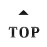

Fate/Grand Order
サーヴァントスキル 強化素材
指定英霊
指定素材
育成英靈數：
{{i}}
英霊選單中文化
顯示總和
增加空格
請選擇
{{item.name}}
技能素材
靈基素材

英霊画像出典：
Fate/GO 茹西教王的理想鄉
英霊名翻訳出典：
Fate/GO 茹西教王的理想鄉
参考資料：
Fate/Grand Order @wiki 【FGO】
{{lvName}} {{lv.level}} → {{lv.level + 1}}
x {{lv.items[i - 1].count | thousandComma}}
x {{QP | thousandComma}}
x {{item.count | thousandComma}}
全職階
{{cls}}
請選擇
No.{{servant.id}} {{servant.name}}
現在Skill：
{{i}}
目標Skill：
{{i}}
現在靈基︰
{{i - 1}}
目標靈基︰
{{i - 1}}
隱藏